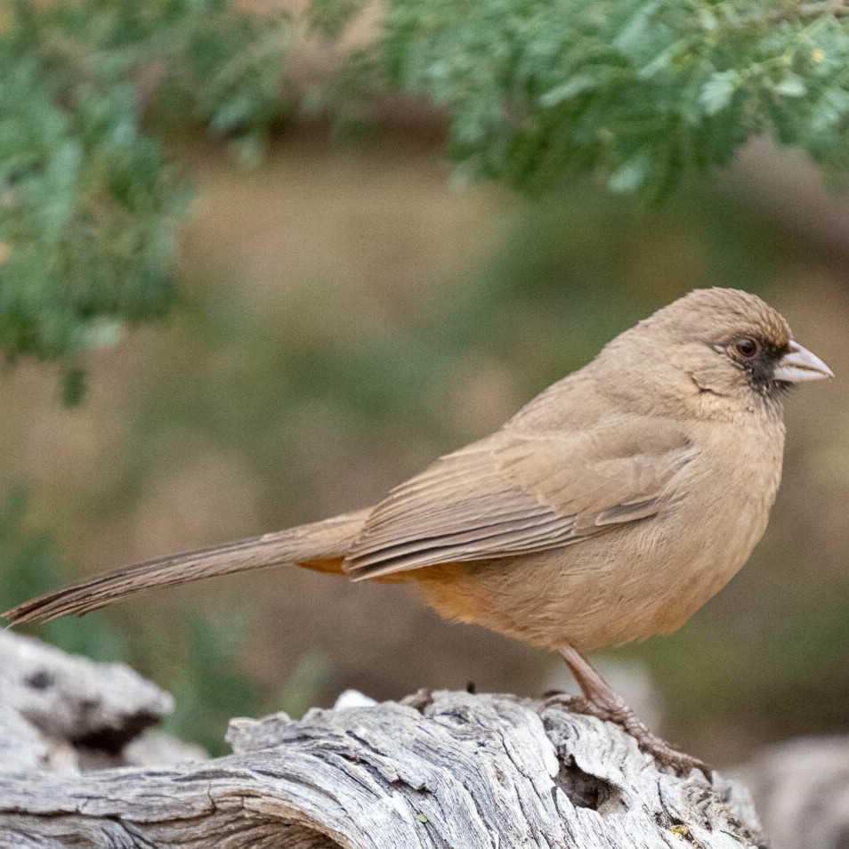
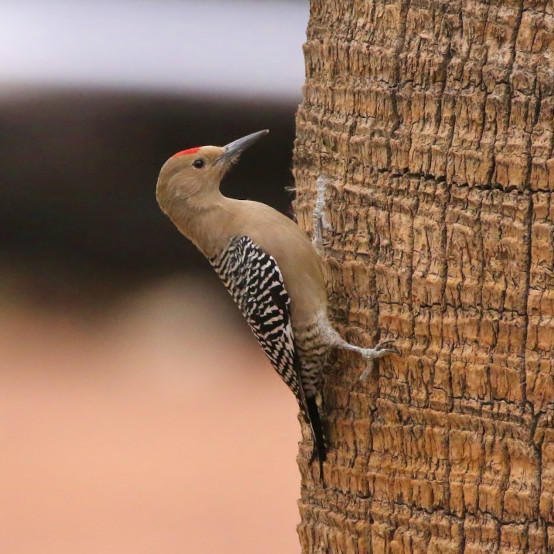
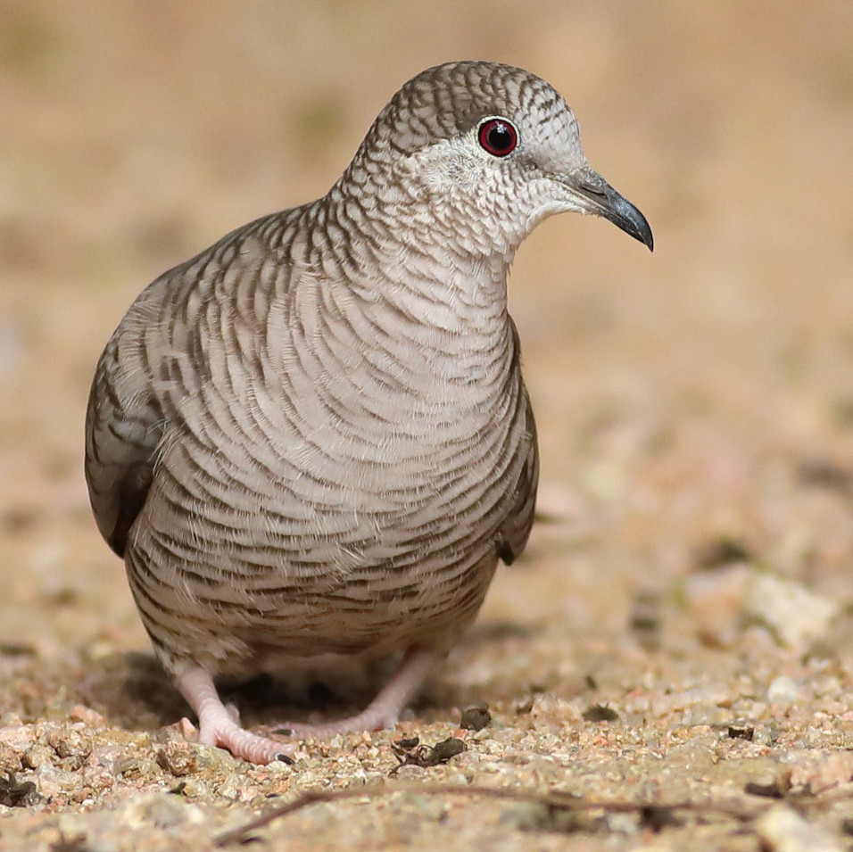
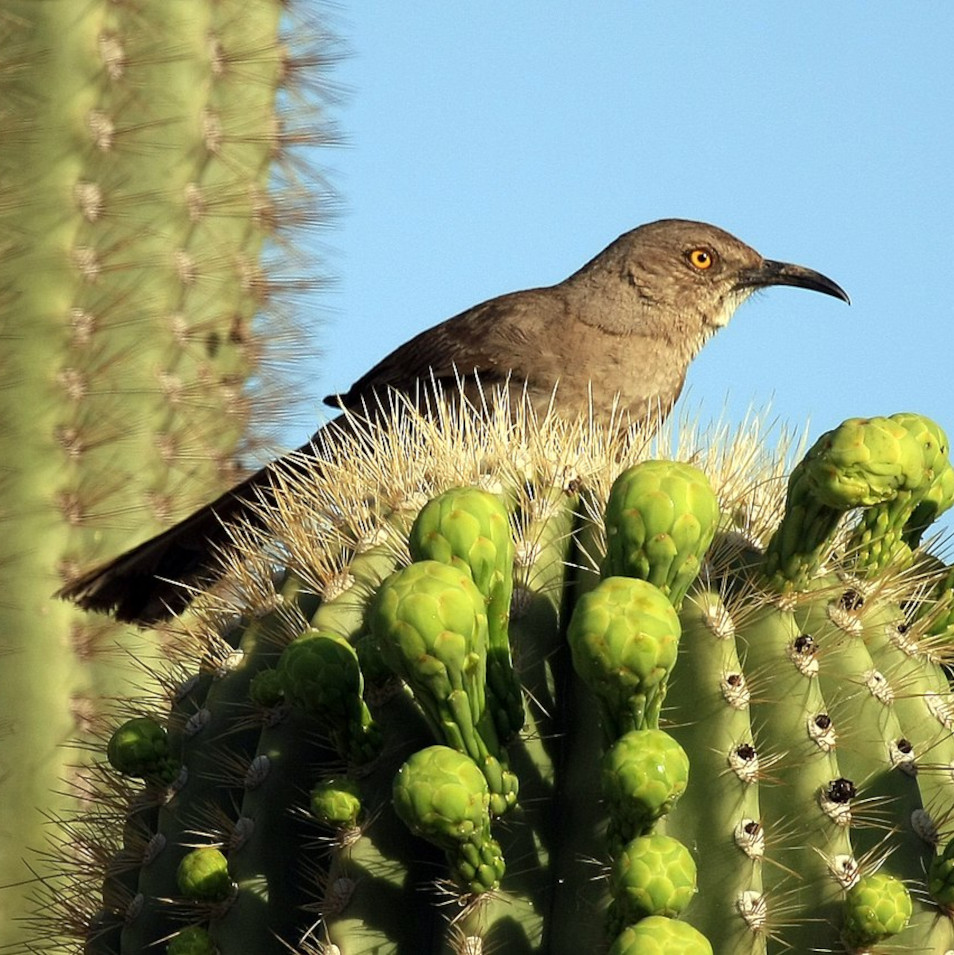
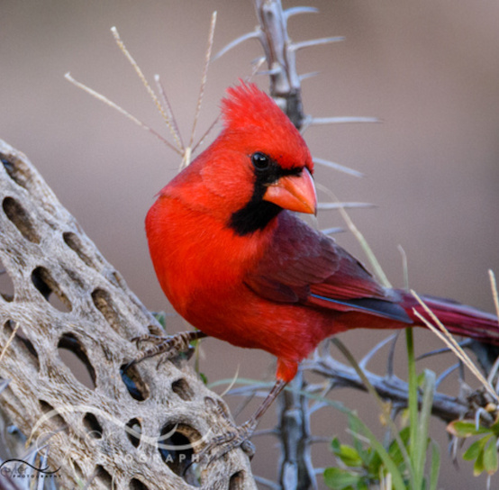
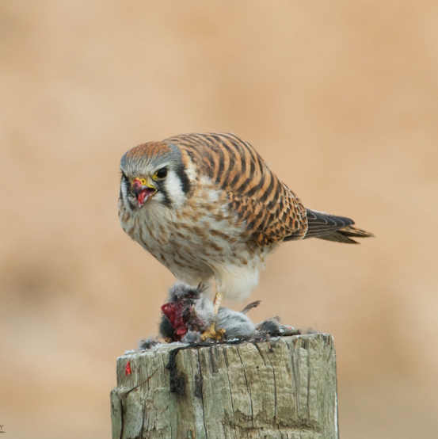
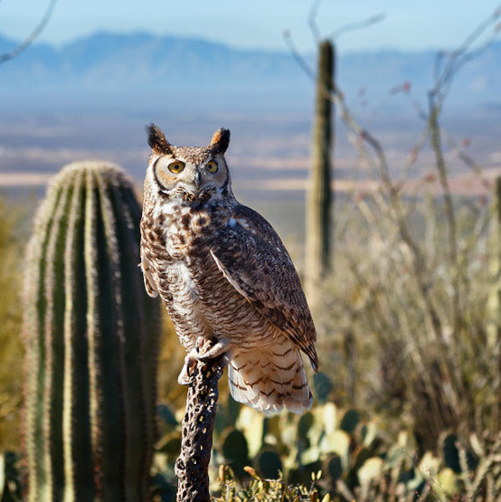
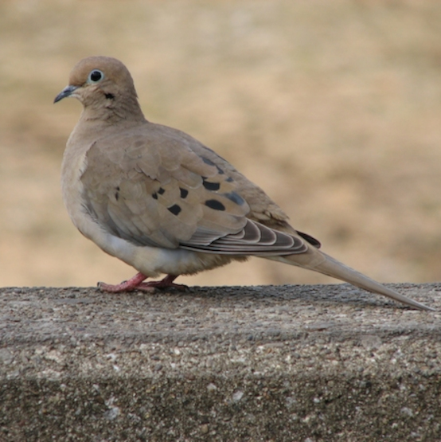

This is the page where I plan to display images that neighbors would like to submit to the site. This is a new site which hasn't received any publicity yet. So, I don't have any external submissions yet. In the meantime, I've
compiled of a small catalogue of bird species that live here and I have them displayed in the image gallery below. Enjoy!
CLOSEPlease view HTML source code for image citations
Ron Niebrugge, https://my-photo-blog.com/aberts-towhee

Abert's Towhee
Tim Van Der Torre, https://observation.org/species/70599/

Gila Woodpecker
Graham Montgomery, https://ebird.org/species/incdov

Inca Dove
License: https://creativecommons.org/licenses/by/2.0/deed.en, https://en.wikipedia.org/wiki/Curve-billed_thrasher

Curve-billed thrasher
Michelle E. Eyler, https://www.eylerphotography.com/p539581763/h7958D5FE#h7958d5fe

Sonoran Cardinal
Mia McPherson, https://www.onthewingphotography.com/wings/portfolio-items/female-american-kestrel-perched-on-a-pole-eating-a-vole/

Kestrel
Kathleen Bishop, https://pixels.com/featured/surveying-the-sonoran-kathleen-bishop.html

Sonoran Owl
Zenaida Macroura, https://www.birdwatchersdigest.com/bwdsite/learn/identification/pigeons-and-doves/mourning-dove.php

Mourning Dove
 CLOSE
CLOSE